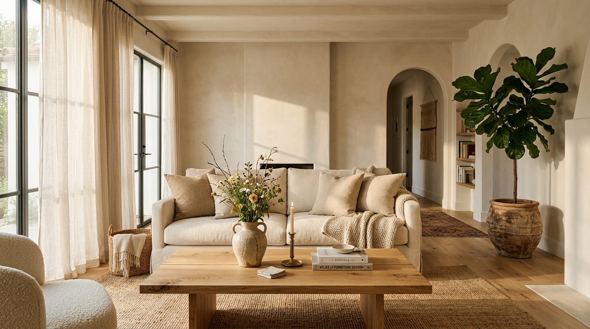
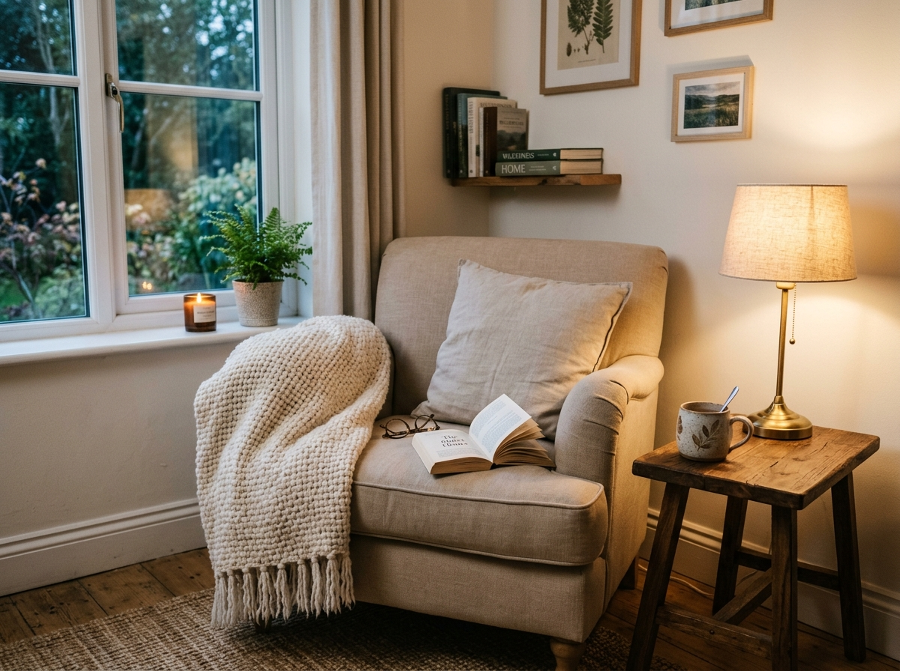
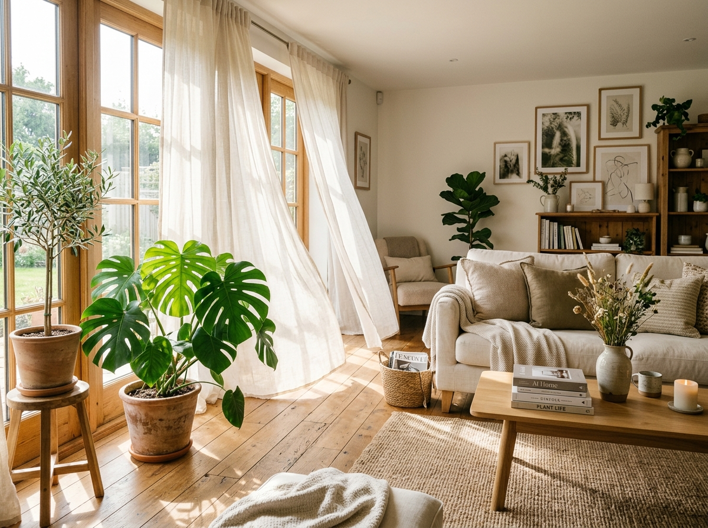
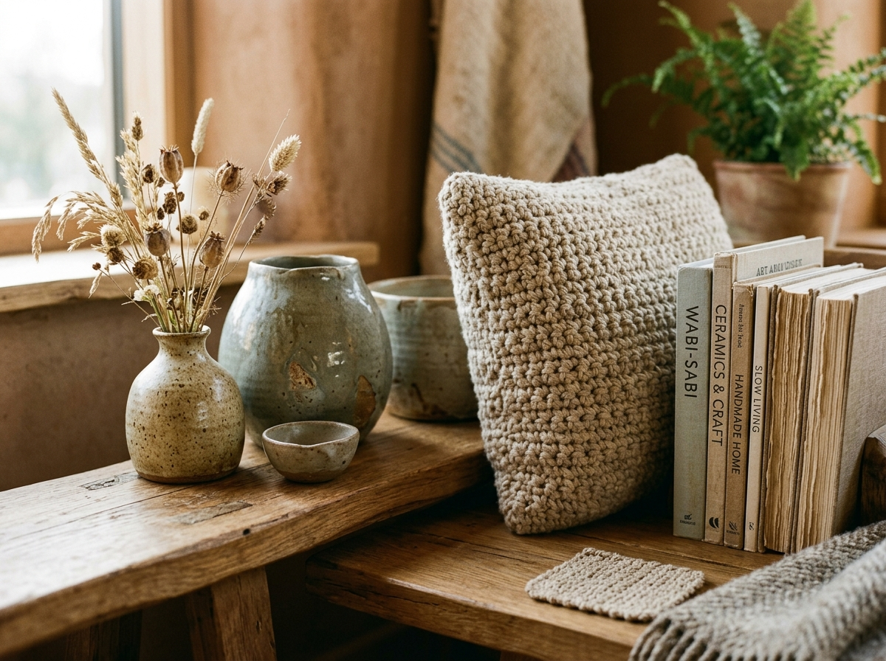

The Art of Making a Home Feel Like You
Because a beautiful home isn't a showroom. It is a place to breathe, rest, and feel at ease.

A beautiful home is often mistaken for a perfectly decorated one.
We see carefully styled rooms, expensive furniture, coordinated cushions and shelves filled with beautiful objects—and assume that this is what makes a home beautiful.
But perhaps beauty at home is less about how a room looks and more about how it makes you feel.
“The real test of a home is surprisingly simple: Can you relax there?”
Can you walk through the door after a difficult day and feel yourself becoming a little calmer? Can you sit down without worrying that you might spoil something? Can you actually use the beautiful things you bought?
A home should invite you in—not make you afraid to touch anything.
1. Start With a Feeling
Before choosing furniture, colours or accessories, ask yourself a simple question:
How do I want my home to feel?
Peaceful? Warm? Fresh? Cosy? Light? Elegant?
Once you know the feeling you want, decorating becomes much easier. Soft colours can create a sense of calm. Natural light can make a room feel open and alive. Plants can bring softness and freshness. Comfortable fabrics and thoughtful lighting can make even a simple room feel welcoming.
Instead of asking, “What is trending?”, start asking: “What makes me feel good?” That is a much better starting point.
2. Beautiful Doesn't Have to Mean Expensive
A beautiful home doesn't necessarily require expensive furniture or luxury accessories. Sometimes, the difference is simply in how thoughtfully things are chosen and arranged.
One meaningful object can have more character than ten decorative pieces bought simply to fill a shelf. A home doesn't become beautiful because everything in it is expensive. It becomes beautiful when the things inside it feel intentional.
So before buying something new, ask: Do I really love it? Will I use it? Does it belong in my space? If the answer is no, leaving the space empty may actually be the better design choice.

3. Let Your Home Be Lived In
There is something lovely about a home that is neat without feeling untouchable. Of course, a home should be clean and organised. But it shouldn't feel like a hotel room where everyone is afraid to sit down.
If the sofa is too precious to use, the dining table too delicate to touch and the crockery too expensive to bring out, what is the point of having them?
Choose beautiful things that can also become part of everyday life. Comfort is not the opposite of elegance. In fact, when beauty and practicality work together, a home becomes much more enjoyable.
4. Don't Be Afraid of Empty Space
One of the easiest ways to make a room feel crowded is to keep adding things. A beautiful vase needs space around it. A painting needs breathing room. Even a carefully styled shelf can lose its charm when every inch is occupied.
You don't have to decorate every corner. Sometimes, what you leave out is just as important as what you put in. A little empty space allows the things you truly love to be noticed.
5. Bring In Light, Air and Nature
Before adding another decorative object, look at the things your home already has to offer: Natural light. Fresh air. Greenery.
These can transform the atmosphere of a room without requiring a large budget. Keep windows as open as practical. Choose curtains that allow daylight in. Bring in plants where they can thrive. And think about lighting beyond the bright overhead bulb—soft, layered lighting can completely change the mood of a room in the evening.
A beautiful room isn't only something you see. It is something you experience.

6. Add Something Handmade
There is a particular warmth in handmade things. A crocheted piece, embroidered cushion, painted artwork, handmade lamp or even something created from an old material can give a room a quality that mass-produced decor often cannot.
It doesn't have to be perfect. In fact, the little imperfections are often what make handmade objects feel human. More importantly, they bring personality into a home. Your home should contain at least a few things that couldn't simply have been picked from a catalogue.

7. Take Inspiration—Don't Copy
Pinterest, Instagram and magazines can be wonderful sources of inspiration. But inspiration and imitation are two different things.
A room that looks beautiful online may not suit your lifestyle, your climate, your family or the way you actually use your home. Take the colour combination you love. Borrow an interesting idea. Notice how someone has used light or texture. But then make it yours.
Your home doesn't need to look like somebody else's beautiful home. It needs to make sense for the life you live.
8. Decorate for the Life You Actually Live
Perhaps the most important question isn't: “Does my home look impressive?” It is: “Does my home work for me?”
- Can you relax there?
- Can you welcome someone without constantly worrying about something getting damaged?
- Can you find what you need without rummaging?
- Can you maintain it without spending all your time cleaning and rearranging?
- Can you look around and recognise your own taste?
If the answer is yes, you're probably closer to creating a beautiful home than you think.
9. A Home Doesn't Have to Be Perfect
Trends will change. Colours will change. Furniture will change. Our lives will change. Our homes can change with us. Let them evolve.
Add something slowly. Remove something that no longer works. Rearrange a corner. Make something by hand. Bring home a plant. Change the lighting. Keep the things that still make you happy.
“Because ultimately, a beautiful home isn't the one that looks perfect to everyone else. It is the one where, after a long day, you can finally exhale.”
The one that feels peaceful.
The one that feels comfortable.
The one that feels unmistakably yours.